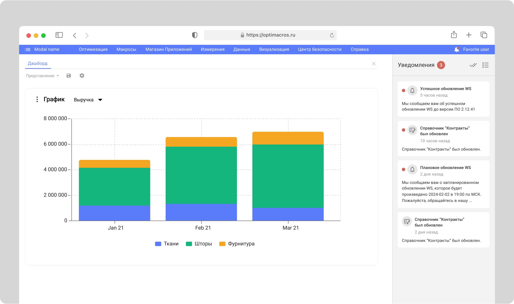
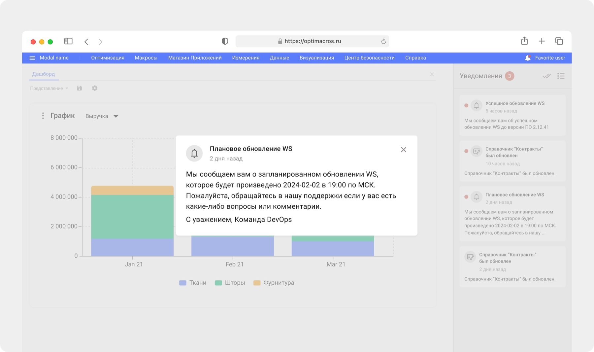
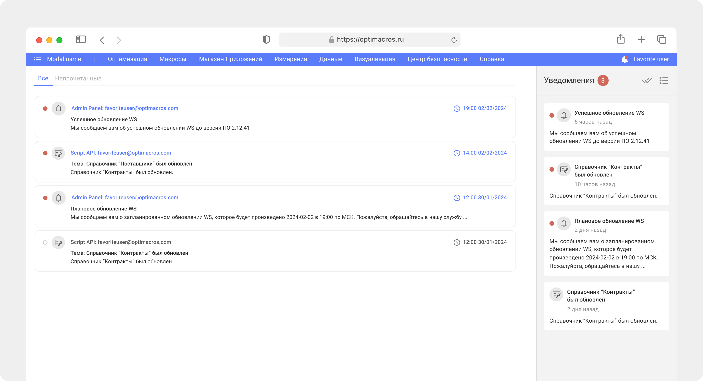
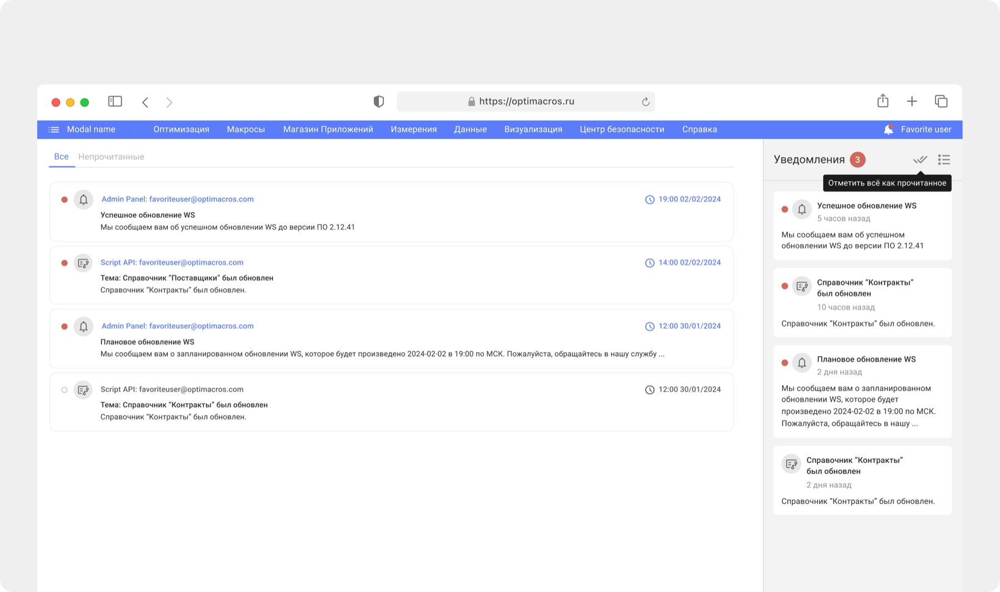

Гипотеза 1
Если добавить историю уведомлений, пользователи смогут возвращаться к пропущенным событиям

Спроектировать центр уведомлений для B2B-платформы, который помогает пользователям своевременно узнавать о важных событиях в воркспейсе
Вела проект end-to-end: от формулировки проблемы и проработки гипотез, анализа паттернов центров уведомлений в web-интерфейсах до создания прототипов, UI-дизайна и презентации решений стейкхолдерам

В платформе не было единого канала для уведомлений: пользователи вручную проверяли статусы процессов, могли пропускать важные технические события и обращались в техподдержку за актуальной информацией

Если добавить историю уведомлений, пользователи смогут возвращаться к пропущенным событиям
Если показывать счётчик непрочитанных, пользователи будут реже пропускать новые сообщения
Если дать быстрый доступ к уведомлениям из навигации, пользователям не придётся вручную проверять статусы процессов
Если дать возможность отмечать уведомления прочитанными, пользователи смогут поддерживать список актуальным

Решение расширило возможности скриптов: пользователи получали уведомления об их завершении или ошибке и быстрее возвращались к работе с моделью. После запуска команда получила положительную обратную связь через техподдержку: пользователи отмечали, что давно ждали единый центр уведомлений